Does a palpable pulse exclude acute compartment syndrome?
- Think…
- No. Severe increasing pain and new sensory changes require urgent evaluation even with a pulse.
NUR 198 · Final · Simple exam guide
Cumulative final · Module 13 adds musculoskeletal disorders and trauma.

Start with musculoskeletal trauma, then compare the earliest warnings of deterioration across the five previous exams.
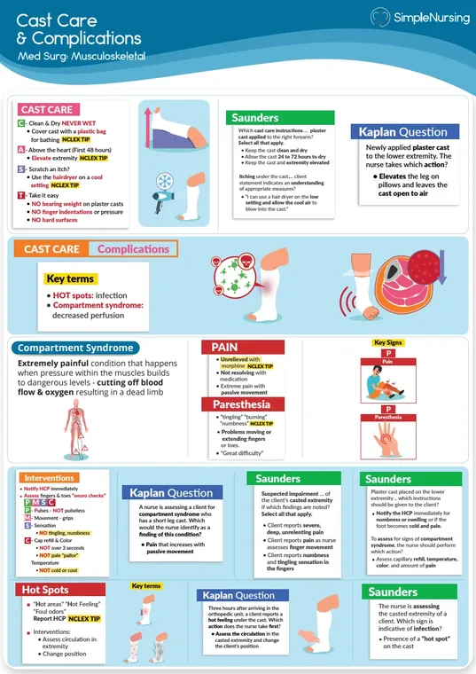
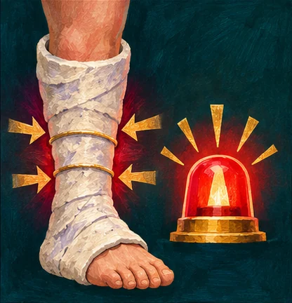

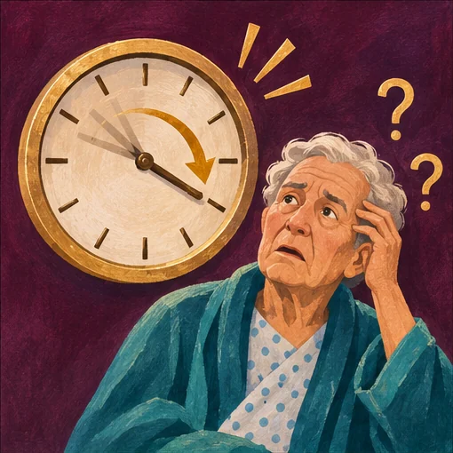
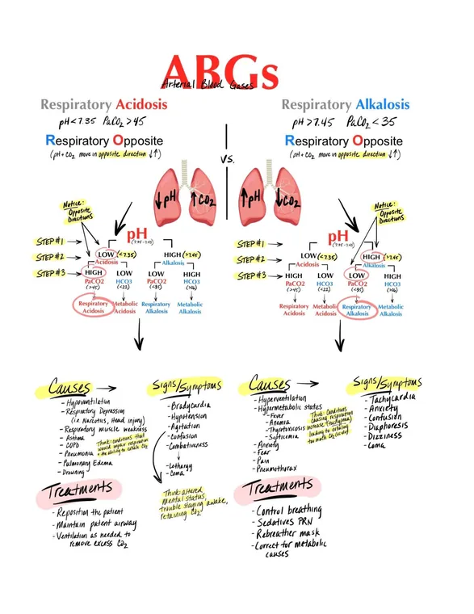
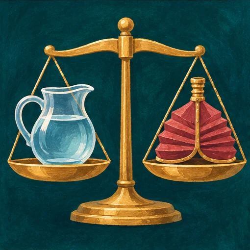
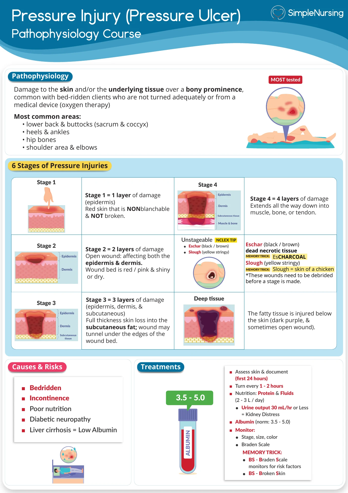
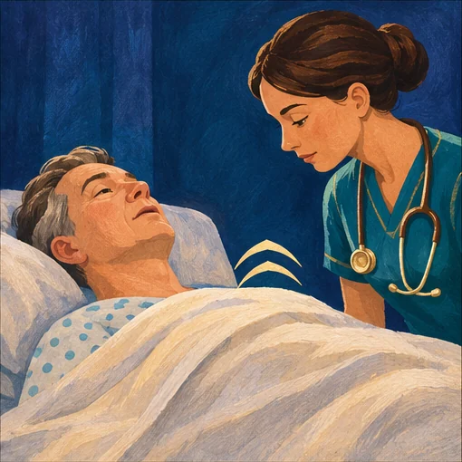


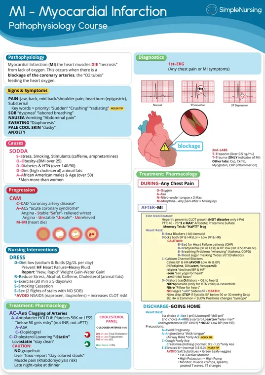
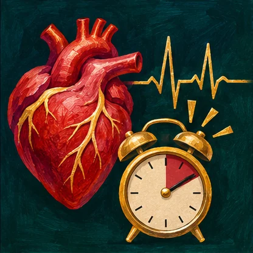
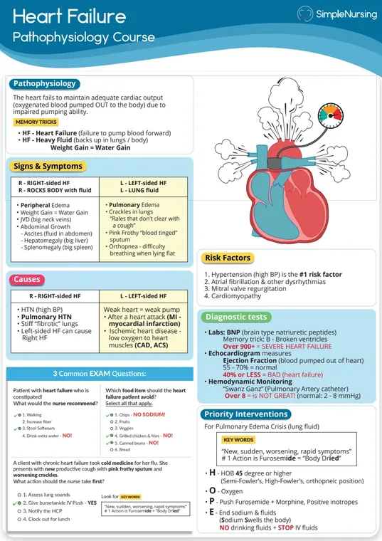
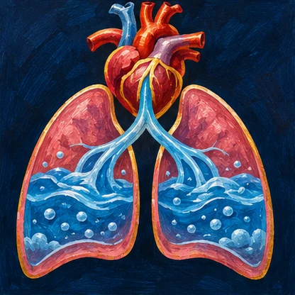


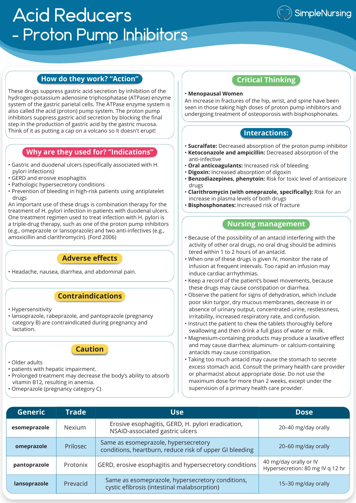
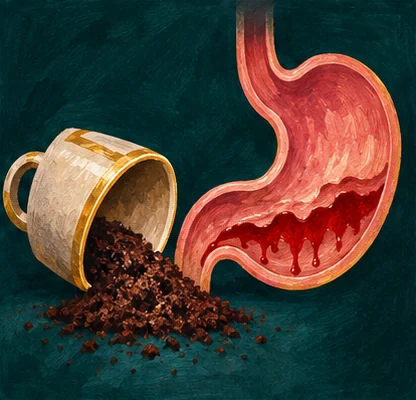

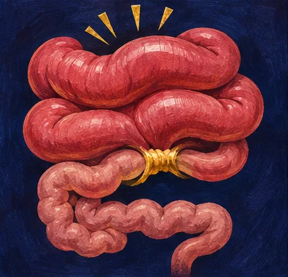
C. Assess distal neurovascular function and obtain urgent evaluation.
Compartment syndrome can occur while distal pulses are still palpable.
B. New drowsiness and shallow breathing after an opioid.
An acute change in arousal and ventilation can precede respiratory failure.